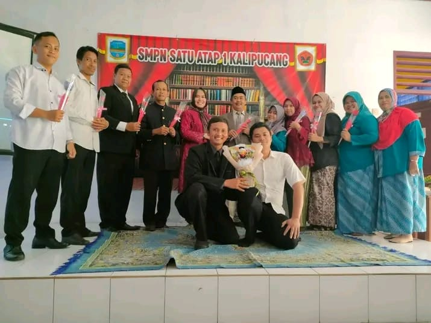
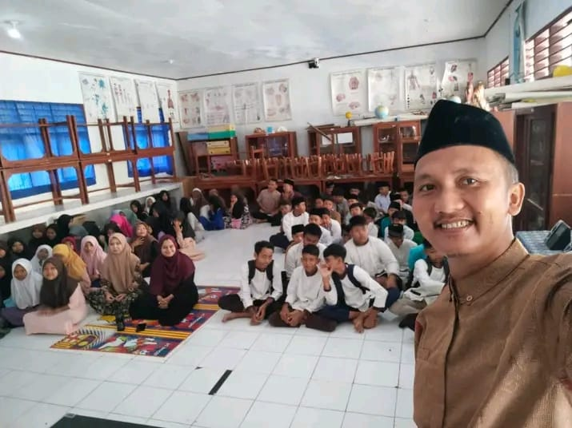

Membangun Generasi Unggul dan Berkarakter
SMPN Satu Atap 1 Kalipucang adalah sekolah menengah pertama yang menyediakan pendidikan berkualitas dalam lingkungan terpadu. Dengan kurikulum standar nasional dan berbagai kegiatan ekstrakurikuler, sekolah ini mendukung pengembangan akademik dan karakter siswa. Berkomitmen mencetak lulusan yang cerdas dan berdaya saing, SMPN Satu Atap 1 Kalipucang terus berinovasi dalam menciptakan lingkungan belajar yang nyaman dan inspiratif.
SMPN Satu Atap 1 Kalipucang adalah sekolah menengah pertama yang menyediakan pendidikan berkualitas dalam lingkungan terpadu. Dengan tenaga pendidik profesional, sekolah ini menerapkan kurikulum standar nasional serta berbagai program ekstrakurikuler untuk mengembangkan potensi siswa. Berkomitmen mencetak generasi unggul, sekolah ini fokus pada pembinaan karakter, prestasi akademik, dan keterampilan siswa. Melalui kerja sama dengan masyarakat dan orang tua, SMPN Satu Atap 1 Kalipucang terus berupaya menciptakan lingkungan belajar yang nyaman dan inspiratif.
"Menjadi sekolah unggul dalam prestasi akademik dan non-akademik, serta membentuk karakter siswa yang beriman, berbudaya, dan berwawasan global."
Program utama yang mengikuti standar pemerintah, mencakup mata pelajaran inti seperti Matematika, Bahasa Indonesia, IPA, IPS, dan lainnya.
Program tambahan bagi siswa yang ingin mendalami materi lebih jauh atau mengikuti kompetisi akademik, seperti olimpiade sains atau lomba debat.
Program pendampingan bagi siswa yang mengalami kesulitan dalam pelajaran tertentu, dengan kelas tambahan atau bimbingan khusus dari guru.
Tim SMPN SATU ATAP 1 KALIPUCANG berhasil meraih juara pertama dalam Lomba Cerdas Cermat tingkat kota. Prestasi ini membanggakan sekolah dan menjadi motivasi bagi siswa lainnya.
Siswa kelas 8 mengikuti kegiatan belajar di luar kelas dengan mengunjungi Museum Nasional. Mereka mendapatkan wawasan baru tentang sejarah dan budaya Indonesia.
Acara tahunan Pentas Seni kembali digelar dengan berbagai pertunjukan menarik, mulai dari tari tradisional, musik, hingga drama. Siswa antusias menampilkan bakat terbaik mereka.